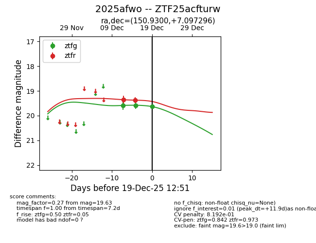
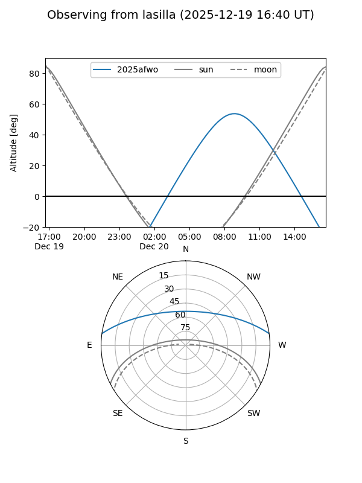
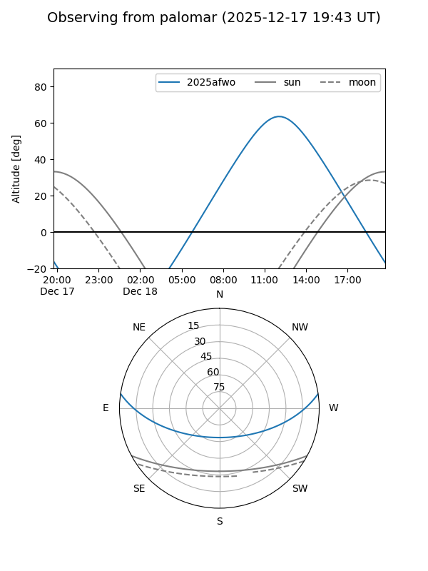

2025afwo
Target 2025afwo at 2025-12-18 11:18
Aliases and brokers:
FINK: fink-portal.org/ZTF25acfturw
Lasair: lasair-ztf.lsst.ac.uk/objects/ZTF25acfturw
ALeRCE: alerce.online/object/ZTF25acfturw
TNS: wis-tns.org/object/2025afwo
YSE: ziggy.ucolick.org/yse/transient_detail/2025afwo
alt names
ZTF25acfturw (ztf,fink_ztf)
2025afwo (tns,yse)
Coordinates:
equatorial (ra, dec) = 150.9300,+7.09730
equatorial (HMS+DMS) = 10:03:43.21,+07:05:50.26
galactic (l, b) = (231.8047,+45.51128)
Photometry
last ztfg=19.58, ztfr=19.37
2 ztfg, 2 ztfr detections
Lightcurve

Visibility


Additional plots